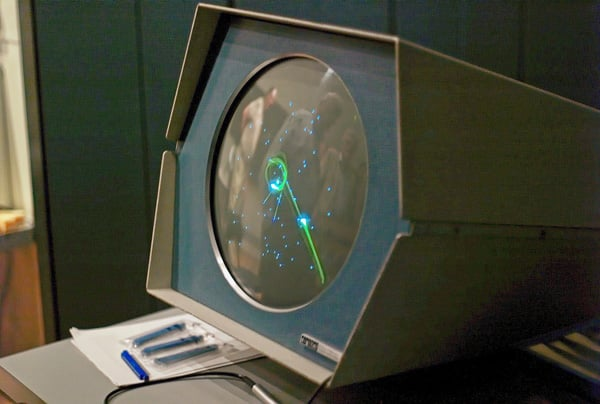

Legacy & Influence
How a student project on a $120,000 minicomputer spawned the first esports tournament, the first arcade game, and a global industry.
Why Spacewar! Changed the World
Spacewar! was never sold commercially. It was never advertised. It ran on a computer that fewer than 50 people owned. And yet, its influence on the video game industry is impossible to overstate. Nearly every aspect of modern gaming — from the concept of a "video game" itself to competitive esports to the space shooter genre — traces back to that PDP-1 in Building 26 at MIT.
Spacewar! established several firsts that would define the medium:
🏆 First Esports Tournament
The 1972 Intergalactic Spacewar Olympics at Stanford is widely considered the first organized video game competition — predating esports by decades.
🎮 First Commercial Arcade Game
Nolan Bushnell's Computer Space (1971), directly inspired by Spacewar!, was the first commercially sold arcade video game — and led directly to the founding of Atari.
🚀 Birth of the Space Shooter Genre
Spacewar! created the template for space combat games, influencing Asteroids, Star Control, Elite, Wing Commander, and countless others.
💻 First Widely Distributed Game
Before Spacewar!, computer games were one-off experiments played by their creators. Spacewar! was the first to be copied, shared, and played across multiple institutions.
The 1972 Intergalactic Spacewar Olympics
On October 19, 1972, the Stanford Artificial Intelligence Laboratory hosted what is now recognized as the first organized video game competition in history: the "Intergalactic Spacewar Olympics."
Organized by Stewart Brand (who would later found the Whole Earth 'Lectronic Link, or WELL — one of the first online communities) and covered by Rolling Stone magazine, the event brought together the best Spacewar! players from Stanford, MIT, and other Bay Area institutions to compete for the title of "Intergalactic Spacewar Champion."
🏆 Tournament Details
| Detail | Value |
|---|---|
| Date | October 19, 1972 |
| Location | Stanford Artificial Intelligence Laboratory (SAIL), Stanford University |
| Game | Spacewar! on a PDP-10 (ported from the original PDP-1) |
| Format | Free-for-all and team competitions |
| Participants | ~20-30 players from Stanford, MIT, and Bay Area tech community |
| Grand Prize Winner | Bruce Baumgart (Stanford) |
| Coverage | Rolling Stone magazine, December 1972 issue ("Spacewar: Fanatic Life and Symbolic Death Among the Computer Bums") |
| Historical Significance | First organized video game competition — the birth of esports |
The Rolling Stone Article
Stewart Brand's Rolling Stone article, titled "Spacewar: Fanatic Life and Symbolic Death Among the Computer Bums," is one of the most important documents in video game history. It was the first major mainstream publication to cover video games as a cultural phenomenon, and it famously predicted:
"Ready or not, computers are coming to the people. That's good news, maybe the best since psychedelics. Whether it will be good for the people is another question... The most interesting thing about Spacewar is that it's a game — the first of a new kind of game, played on a computer, that requires skill, strategy, and quick reflexes."
The article also famously described the competitive scene around Spacewar!, the personalities of the players, and the emerging hacker culture that would eventually give rise to the personal computer revolution and the video game industry.
Computer Space & the Birth of Atari
The most direct and consequential impact of Spacewar! was on Nolan Bushnell, an engineering student at the University of Utah who encountered Spacewar! in the mid-1960s. Bushnell was immediately captivated by the game and recognized its commercial potential — if only it could be made to run on cheaper hardware than a $120,000 PDP-1.
💡 The Lineage
Spacewar! (1962) → Computer Space (1971) → Atari (1972) → Pong (1972) → The Video Game Industry

Genre & Game Design Influence
Beyond its direct role in spawning the arcade industry, Spacewar! established gameplay conventions and design patterns that would influence game developers for decades:
🚀 The Space Shooter Genre
Spacewar! created the template for all space combat games. The core loop — pilot a ship, shoot projectiles, manage momentum, navigate a 2D playfield — was reused and refined by Asteroids (1979), Defender (1981), Star Control (1990), and countless others.
⚡ Physics-Based Gameplay
Spacewar! was one of the first games to simulate realistic physics — inertia, gravity, momentum. This design choice would influence everything from Lunar Lander (1979) to Angry Birds (2009), establishing "physics games" as a major genre.
🎯 Competitive Multiplayer
Spacewar! was designed from the start as a two-player competitive game. This established the concept of head-to-head video game competition, paving the way for Pong, Street Fighter, StarCraft, and the entire esports ecosystem.
🔮 Risk-Reward Mechanics
The hyperspace jump — a powerful escape tool with a random chance of killing you — is an early example of risk-reward game design. This mechanic would become a staple of game design, from roguelikes to battle royales.
🌠 Environmental Hazards
The central star — which both helps (gravity slingshots) and harms (collision = death) — introduced the concept of the environment as a third participant in gameplay. This would influence games from Joust to Super Smash Bros.
🎮 Vector Graphics Aesthetic
Spacewar!'s vector CRT display established a visual style that would define arcade games through the 1970s and early 1980s. Asteroids, Tempest, Battlezone, and Star Wars arcade all used vector graphics directly inspired by Spacewar!'s visual language.
Cultural Recognition & Honors
In recent decades, Spacewar! has received widespread recognition as a cultural and historical landmark:
Games Directly Inspired by Spacewar!
| Game | Year | Connection to Spacewar! |
|---|---|---|
| Computer Space | 1971 | Direct coin-op adaptation by Nolan Bushnell & Ted Dabney; first commercial arcade video game |
| Pong | 1972 | Created by Atari (founded by Bushnell after Computer Space); simplified the Spacewar! formula for mass appeal |
| Space Wars | 1977 | Vector graphics arcade game by Cinematronics; essentially a commercial Spacewar! clone with added weapons |
| Asteroids | 1979 | Atari vector arcade game by Ed Logg; single-player adaptation of Spacewar!'s physics and controls |
| Gravitar | 1982 | Atari arcade game emphasizing gravity mechanics; direct spiritual successor to Spacewar!'s physics |
| Star Control | 1990 | Toys for Bob's PC classic; "The Ur-Quan Masters" combat mode is explicitly modeled on Spacewar! |
| Elite | 1984 | David Braben & Ian Bell's space trading classic; combat mechanics inspired by Spacewar!'s ship-to-ship duels |
| SubSpace / Continuum | 1995 | Early online multiplayer space shooter; direct descendant of Spacewar!'s competitive multiplayer formula |
"Spacewar! is the most important video game ever made. It didn't just start an industry — it
established the very idea that computers could be used for play, for competition, for joy.
Every game you've ever played, every console you've ever owned, every esports tournament you've
ever watched — it all traces back to that PDP-1 in a basement at MIT."
— On Spacewar!'s legacy
Experience the game that started it all: